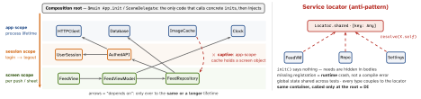

design · folio
In one line: DI = a type receives its collaborators instead of creating or finding them. The
substance: where the graph is built (one composition root), how long each object
lives (scopes; never long-lived holding short-lived), who may ask a container (only the
root — anywhere else it is a service locator). Environment and @Dependency
are ambient DI: handy, but the dependency leaves the init.
Download PDF Print view LaTeX source


How it works
- Constructor — default: required,
let, never half-built. Property — optional/late (storyboard VCs); risk: used before set. Method — varies per call. Ambient — looked up from an implicit scope (@Environment,@Dependency,@TaskLocal). - Composition root (Seemann): one place near the entry point where the graph is composed. Coordinators/factories are sub-roots handed what they need.
- Pure DI = hand-wired, no library, compile-checked; a container automates wiring + lifetimes. Container vs locator depends on where it is called, not on the library.
- Scopes: app · session (rebuild on logout) · screen/flow (owned by its coordinator) · transient. Captive dependency: a longer-lived object holding a shorter-lived one keeps it alive past its scope.
- Cycles: usually a smell — extract the shared part into C, or let one side emit events. Else break one edge:
weakproperty or a lazy provider closure. Swinject:initCompleted+ a property; init↔init cycles unsupported.
Example — Pure DI at the root
@MainActor final class AppContainer { // built ONCE, App.init
let http = HTTPClient(session: .shared) // app scope
let db = Database(file: "app.sqlite")
var session: UserSession? // session scope
func logout() { session = nil } // drop that scope
func makeFeed() -> FeedViewModel { // screen: new each
FeedViewModel(repo: FeedRepository(http: http, db: db),
now: { Date() }) } } // closure dependencyRemember
One root builds, everyone else receives. Arrows point to longer lives. A container asked from inside a type is a locator.
SwiftUI Environment = DI by tree position
extension EnvironmentValues {
@Entry var api: APIClient = .live } // Xcode 16 macro
struct FeedView: View {
@Environment(\.api) private var api // absent: default
@Environment(Session.self) private var session // absent: CRASH
var body: some View { Text(session.name) } }
FeedView().environment(\.api, .mock).environment(Session())@Entry (Xcode 16) back-deploys: it only generates the key. A keyed value
always has a default; an @Observable object via .environment(obj) (iOS 17)
or .environmentObject has none — missing ⇒ runtime crash. Flows down
the tree only; read it in body, not init.
pointfree swift-dependencies
extension APIClient: DependencyKey {
static let liveValue = APIClient.live }
extension DependencyValues {
var api: APIClient {
get { self[APIClient.self] }
set { self[APIClient.self] = newValue } } }
@Observable @MainActor final class FeedModel {
@ObservationIgnored @Dependency(\.api) var api
@ObservationIgnored @Dependency(\.date.now) var now }
let model = withDependencies { // in a test
$0.api.fetchFeed = { [] } // ONE endpoint
} operation: { FeedModel() }Three values per key: liveValue · previewValue (defaults to live)
· testValue (defaults to preview); a live value reached in a test
fails the test. @DependencyClient (import DependenciesMacros) makes every
endpoint unimplemented by default. Captured when the object is created inside
withDependencies.
Containers — only what they document
| Swinject | c.register(API.self) { _ in LiveAPI() }, c.resolve(API.self)!;
scopes .transient · .graph (default) · .container (singleton) ·
.weak |
| Factory | extension Container { var api: Factory<API> { self { LiveAPI() }.singleton } };
@Injected(\.api); test: Container.shared.api.register { Mock() };
scopes unique (default) · cached · shared (weak) ·
singleton · graph |
| Resolver | same author; officially deprecated, replaced by Factory |
Traps
@Injected/@Dependencyare lookups (locator-shaped): a default removes the missing-registration crash, not the hiding.- Hand-rolled
@Injectedoverstatic var currentValue= a global mutable registry: overrides leak between tests; Swift 6 rejects the nonisolatedstatic var(SE-0412). - Logout without rebuilding the session scope = the next user sees old data.
- Singleton holding a per-screen object = captive dependency.
@Environmentread ininit: not installed yet → the default.